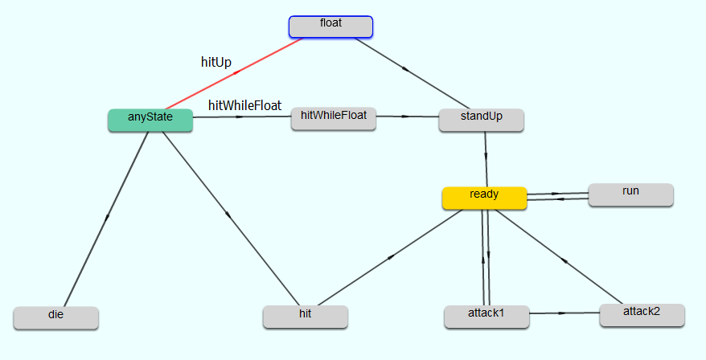
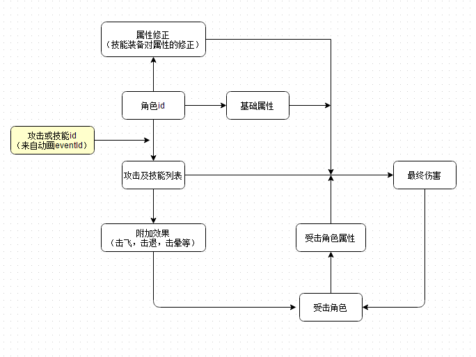

完整设计并完成了一款2D横版动作游戏。对比刚入行时，现在做游戏架构设计，考虑最多的关键词是“解耦”，“数据驱动”，“自动化”。这次设计也是本着这样的原则。
打击判定
1. 碰撞检测方式选择：
- 物理引擎：最偷懒的方式，通常有物理引擎对应的编辑器来编辑碰撞体（3D）或碰撞框（2D）。以2D为例，boundingBox通常编辑为圆形或多边形，适用于精度要求高而效率要求不高的情况。
- AABB：效率最高的方式，矩形间的碰撞检测，适用于效率要求高而精度要求不高的情况。
- 像素级碰撞检测：精度最高的方式，基于像素值是否透明和交叠来检测，同样效率不高。
对于动作游戏，当大量敌人，远程武器，技能满屏飞时不会比弹幕游戏对碰撞效率的要求低多少。这里采用AABB的方式，事实证明不影响体验，足以满足精度需求，而实际上很多经典的ACT甚至FTG也都是采用的这种方式。
2. boundingBox编辑：
通过手写配置文件描述距离，范围固然也是可以实现的。但这和手写UI一样痛苦和不利于后续修改。论可视化编辑的必要性：
-
直观。
-
解耦。逻辑与数据分离，无需修改代码。
-
需求者即为执行者，减少沟通成本。
我的项目采用了骨骼动画，我是这样做可视化编辑的：仍然使用骨骼动画的编辑器，增加透明的骨骼作为boundingBox，程序中通过骨骼名称找到该骨骼，获取其坐标，尺寸用于碰撞检测。是不是比想象的简单呢？其他编辑器也都可以类比实现，为我们节省了大量时间。
3. 碰撞检测的时机：
通过可视化编辑我们可以得到攻击者和受击者的boundingBox，但是一个攻击动作是一个动画，应该在什么时候去做碰撞检测呢？我们依然把它交给需求的提出者，通过编辑器来完成。使用的是动画编辑器中的事件功能，在需要做判定的帧上填写事件id，程序根据id处理判定（也有一些编辑器是直接选择function的）。
动作状态机
动作游戏中，角色会有待机，跑，攻击，技能，受击，死亡等动画。通过输入控制，或游戏内角色间交互触发动画的跳转。
当状态很少时，直接用代码控制播放哪一个动画或图片也无可厚非，比如一款弹幕游戏中的飞机可能只有正常和死亡两种状态。但当状态逐渐增多时，跳转关系也呈几何级增长，显示与控制紧紧耦合在一起。后续的开发，维护，扩展都将是噩梦。又见可视化编辑必要性。
在这里引入状态机来管理动画是在合适不过的了。思路如下：
- 状态：每个状态对应一个动画，通过状态跳转控制动画切换。
- 跳转：两个状态间的有序连接。满足条件即从当前状态跳转至下一个状态。
- 条件：跳转的条件，可包含多个。
具体编辑器的实现可参考这里。
AI
行为树与状态机
行为树是我们实现AI的不二选择。
看过很多初学者的提问，设计模块时，迷失在行为树和状态机之间，知道了用什么，却不知道怎么用。有一些泛泛的认识，实际做时又联系不起来。问题类似：
“敌人被浮空连击这样的功能用行为树怎么实现呢？”
“行为树如何处理状态呢？比如死亡状态？”
可以发现，产生了这样一个问题：究竟哪些逻辑是应该交给行为树处理，哪些不是？不弄清楚这个问题是无法驾驭行为树的。
如果不使用动作状态机，一味使用行为树同时处理行为和状态很快就会焦头烂额，失去逻辑。我的建议是行为和状态一定要分开管理，二者是截然不同的层次。对于有经验的开发者这样的分类几乎是无意识的，仔细思考一下其中的逻辑究竟是什么，能够让我们像区分“水果”和“家具”一样把行为和状态区分开呢？
行为会对应对象身上的一个方法。比如加菲猫可以吃，睡。
状态会对应对象的一个外观展现。比如加菲猫在吃的状态会露出它的吃相，在睡的状态会露出它的睡相。
有人会说：“听了之后，吃既是行为又是状态啊，更糊涂了。”
进一步说明，伪代码会是这个样子的：
1 | void eat(){ |
可以看到“eat方法”的逻辑就是将状态切换到“eat状态”，从而播放吃的动画。行为树不会直接控制状态，行为树唯一操作的就是方法，由方法去控制状态。
回答上面的问题：
“敌人被浮空连击这样的功能用行为树怎么实现呢？”
答：不应该使用行为树，而是用动作状态机实现。

float为浮空状态，hitWhileFloat是浮空中再次受到受击的状态。只要击中浮空中的敌人时给予hitWhileFloat信号，即可令敌人再次浮空。
“行为树如何处理状态呢？比如死亡状态？”
答：行为树可以通过对象的成员方法或黑板(注：一个行为树的黑板通常就是GameController，一个持有主角和所有敌人的引用的管理类)来获取状态。如果死亡后没有复活状态的话，此时应该调用对象的die方法，该方法应包含停止行为树的逻辑。
编辑器
寻找开源行为树编辑器的可以参考这里。
最终导出json文件作为行为树的配置文件。这样的行为树编辑器与游戏的运行时是割离的，无法直观调试（参见unity的Behaviour Designer）。要做到联调还需要增加与游戏运行时的通信部分。这部分有时间可以考虑一下，也是个有趣的课题。
数据
格式转换
数据是通用的模块，像xlsToJson或xlsToXml这样的自动化转换工具是必不可少的。网上有很多开源类似的项目，有PHP的，有Node.js的，任君选用。
数据索引

简单串联一下攻击过程：
-
由按键或行为树调用攻击行为
-
攻击行为给予状态机信号，状态跳转，播放攻击动画
-
动画播放至包含事件的关键帧触发攻击判定
-
使用动画事件包含的骨骼信息完成碰撞检测
-
如果判定成立，由动画事件包含的攻击id，攻击者id和被击者id共同决定最终伤害和附加效果
-
被击者hp修改和状态跳转
-
攻击结束